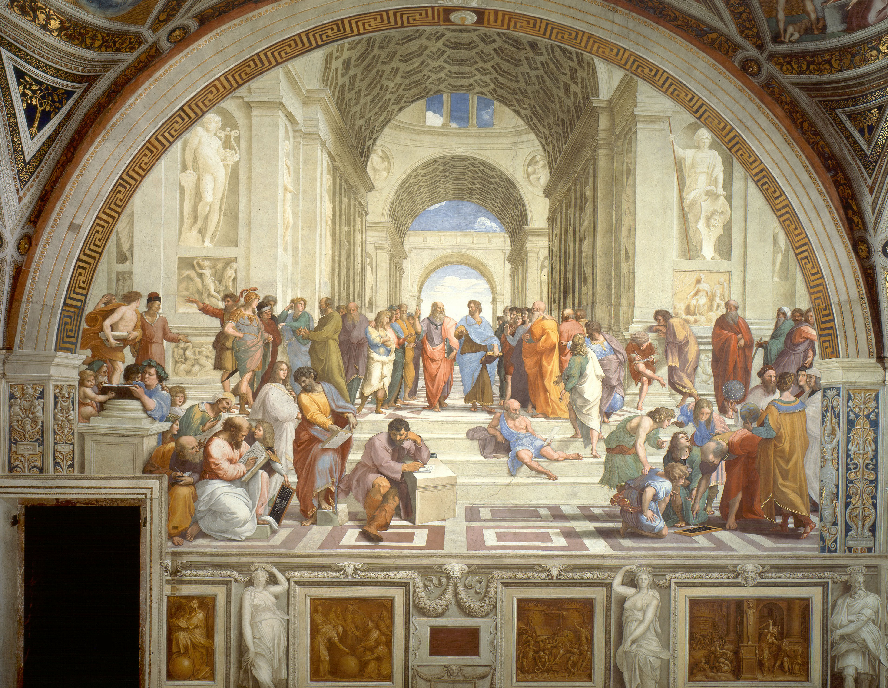

1. gaia · Zer da Filosofia?
Jendeari pentsatzen ari dela pentsarazten badiozu, maite izango zaitu; baina benetan pentsarazten badiozu, gorroto izango zaitu.
—Don Marquis, egotzia (jatorrizkoa aurkitu gabe; 1932az geroztik inprimatua) · Clauderen itzulpena, ingelesetik
Filosofiak tristatzeko balio du. Inor tristatzen ez duen eta inor gogaitzen ez duen filosofia ez da filosofia. Ergelkeriari kalte egiteko balio du, ergelkeria zerbait lotsagarri bihurtzen du.
—Gilles Deleuze, Nietzsche et la philosophie (1962; Nietzsche eta filosofia), III · Clauderen itzulpena, frantsesetik
Zerk egin diezaguke, orduan, bidean lagun? Gauza bakar batek, eta ez besterik: filosofiak. Eta hura barneko jeinua laidorik eta kalterik gabe gordetzean datza, plazeren eta oinazeen jabe.
—Marko Aurelio, Meditazioak, II, 17 · Clauderen itzulpena, grezieratik
Filosofia ez da ofizio herrikoi bat, ez eta erakustaldirako egina ere; ez dago hitzetan, egitateetan baizik. Ez da erabiltzen eguna entretenimenduren batekin igaro dadin, ezta aisiari asperdura kentzeko ere: arima eratzen eta moldatzen du, bizitza ordenatzen du, ekintzak zuzentzen ditu.
—Luzio Anneo Seneka, Epistulae morales ad Lucilium (Luziliorentzako gutunak), 16, 3 · Clauderen itzulpena, latinetik
Munduak nolakoa izan behar duen irakasteaz oraindik hitz bat esatearren: horretarako, filosofia beranduegi iristen da beti. […] Minervaren hontzak ez dio hegaldiari ekiten ilunabarra erori arte.
—Georg Wilhelm Friedrich Hegel, Grundlinien der Philosophie des Rechts (Zuzenbide-filosofiaren oinarri-lerroak), hitzaurrea (1820) · Clauderen itzulpena, alemanetik
Gutxienez ikasturte bat emango dugu Filosofia ikasten, eta beste bat gehiago Filosofiaren Historia ikasten; komeni zaigu jakitea zertan arituko garen. Baliteke zuk aurretiazko ideiaren bat izatea Filosofia zer den, baina, irakasgai honekin behin eta berriz gertatuko zaigun bezala, gure aurreiritziek argitu baino gehiago ilundu egiten dute. Has gaitezen, bada, lehenengotik.

§01 · Filosofiaren galderak
Etimologia ez da aski. Gaiari buruzko ia liburu eta bideo guztiek bezala has gintezke: filosofia hitza jatorri grekokoa da, eta sophíaz, «jakinduria», eta philiaz, «maitasuna», osatzen da. Horrela, filosofia «jakinduriarenganako maitasuna» litzateke. Nozio oso poetikoa da, baina ez gaitu hurbiltzen egingo dugun horretara: ez gara jakinduria maitatzen arituko —hori dena delakoa dela ere—, eta, gainera, beste diziplina askok ere maite dute jakintza, hala nola fisikak, filologiak edo biologiak.
Iraungitzen ez diren bederatzi galdera. Etimologia baztertuta, nondik joko dugu? Ikus ditzagun galdera filosofikoen adibide batzuk; izan ere, galderak izate hutsak —eta era jakin batean formulatutako galderak izateak— asko esaten digu jada diziplinaz:
- Existitzen al da Jainkoa?
- Nola jakin dezaket orain ametsetan ari naizen?
- Askea al da nire nahimena?
- Zein ekintza dira moralki onak edo txarrak?
- Nola eratzen da gizarte justu bat?
- Ba al du bizitzak helbururik?
- Ba al dut «arima» bat, nire gorputzaren heriotzaren ondoren biziraungo duena?
- Zerez dago eginda errealitatea?
- Nola jakin dezaket zerbait egiazkoa den?
Haurrak, mozkorrak eta buruzagi erlijiosoak. Baina galdera hauek ez dituzte filosofoek bakarrik egiten. Gutxienez beste hiru pertsona motak ere egiten dituzte:
- Haurrak jakin-min handikoak dira, eta etengabe galdetzen dute gauzen zergatia —jarrera oso filosofikoa—, inolako erantzunekin asebete gabe, zeinahi sakona iruditu arren: beti galde dezakete beste behin «eta hori zergatik?». Denborarekin galdetzeari uzten diote, ez behin betiko erantzunak aurkitu dituztelako, baizik eta, heldu ahala, beste gauza batzuez arduratzen direlako: lana bilatzeaz, zergak ordaintzeaz, botoa emateaz.
- Mozkorrak —edo drogatuta daudenak— noizean behin eztabaida sutsuetan sartzen dira auzi transzendental hauetaz. In vino veritas, dio esapide latindarrak: ardoan dago egia1.
- Buruzagi erlijiosoek erantzun sorta finkatu bat izan ohi dute: beren fedeak eta beren doktrinak ezartzen dituztenak.
Haurrek ez bezala, filosofoek ez diote inoiz jakin-minari uko egiten —egingo baliote, filosofo izateari utziko liokete—2: jakin-mina eta zalantza ez daude galderaren abiapuntuan bakarrik, jarduera filosofiko osoa gidatzen baitute. Mozkorrek ez bezala, ez dira mugatzen pentsatzen dutena filtrorik gabe esatera3: ardoak ez dio edaleari ematen hark edan gabe ez zeukan inolako jakintzarik, eta, gainera, judizioa eta adierazpena lausotzen dizkio. Eta buruzagi erlijiosoek ez bezala, galdera hauei era batera edo kontrakora erantzun dakieke filosofo izateari utzi gabe: «existitzen al da Jainkoa?» galderari apaiz batek baietz baino ezin dio erantzun —fededunarentzat, Jainkoaren existentzia aurresuposizio bat da, ez ondorio bat—; filosofoen artean, berriz, badira fededunak, agnostikoak eta ateoak.
§02 · Zerk egiten du filosofiko galdera bat?
Subjektiboak al dira? Zer dute komunean galdera hauek? Pentsa genezake subjektiboak direla, bakoitzarentzat erantzun desberdin eta zuzenak dituztela, gustuek bezala: niri txokolatezko izozkia gustatzen zait, eta zuri, limoizkoa. Baina auzi filosofikoak ez dira subjektiboak: Jainkoa existitzen da, edo ez da existitzen; arima dugu, edo ez dugu. Ados ez jartzeak ez du esan nahi edozerk balio duenik: jarreretako bat okerra izango da, gaur hori erabakitzen jakin ez arren. Beste kontu bat da auzi horietako askok «pieza mugikor asko» izatea —gizarte justuari buruzko galdera jakintza soziologikoaren eta abiapuntuko balio etikoen araberakoa da—; baina, hala ere, erantzun guztiek ez dute berdin balio.
Sakonak al dira? Enpirikoaren muga. Pentsa genezake, halaber, sakonak direla. Eta badira; baina sakontasuna ez da filosofiaren monopolioa: fisikariek beren buruari galdetzen diote unibertsoa betiko hedatuko ote den; biologoek, nondik datorren bizitza, edo zer den bizitza. Galdera sakon-sakonak dira, baina ez dira filosofikoak. Zertan bereizten dira? Zientziaren galderak, funtsean, behaketaren eta esperimentazioaren bidez erantzun daitezkeela: enpirikoak dira. Oiloak obiparoak diren jakiteko, aski da haiei behatzea. Beraz, galdera bat enpirikoki erantzun badaiteke, ez da filosofikoa.
Ez matematika, ez geometria. Baina badira enpirikoki erantzun ezin diren galderak, eta haietako batzuk filosofikoak dira, eta beste batzuk, ez. Hemen fin ibili behar dugu. Galdera ez-enpiriko baina filosofiko ere ez direnen kasurik argiena matematikarena eta geometriarena da. Neure buruari «9 zenbakia lehena al da?» galdetzen badiot, erantzuna ez dago kalera irten eta «9» bat bilatzearen mende, ezta hura laborategi batean ixtearen mende ere: matematikariek zenbakia zer den eta zenbaki lehena zer den ezartzeko finkatutako aurretiazko definizioen mende dago4. Gauza bera geometriarekin: triangelua hiru aldeko poligonoa da, baina bi dimentsio baino ez ditu; beraz, ez dago triangelua den trafiko-seinalerik, zeinahi zehatza dela ere. Galdera ez-enpiriko horiek definizioetatik edo axiometatik abiatutako froben bidez erantzuten dira, eta horiek ere ez dira filosofikoak.
Galdera mota bakarra geratzen da benetan filosofikoa izan daitekeena: definizioetatik edo axiometatik eratorritako froben bidez ebatzi ezin diren galdera ez-enpirikoak.
§03 · Filosofiaren definizio bat
Argudiaketa tresna bakar gisa. Orain hobeto kokatuta gaude filosofia definitzeko: «Filosofia behaketaz, esperimentazioz nahiz definizioen edo axiomen mendeko froben bidez erantzun ezin ditugun galderei zorroztasunez erantzuteko proiektua da». Egiazta dezagun adibide batekin: «nola eratzen da gizarte justu bat?» galderak ez du iragarpen bat eskatzen, ezta azalpen bat ere, justifikazio bat baizik. Beha dezakegu zer egiten duten gizarteek —horixe egiten dute soziologiak edo ekonomiak—, baina haietako batek ere ez digu esango zer egin beharko luketen. Hori ebazteko tresna bakarra argudiaketa da: zerbait frogatzen edo norbait konbentzitzen saiatzen den arrazoizko prozesua.
Bi objekzio. Lehenengoa: erantzunak behaketaz edo kalkuluz egiaztatu ezin baditugu, edozerk balio al du? Ez: argudio batzuk beste batzuk baino hobeak dira, eta onek hobeetara garamatzate, egiara hurbilduz5. Bigarrena: filosofiak ez duela ezer ekoizten, bi mila urte baino gehiago igarota gauza berberez eztabaidatzen jarraitzen baitugu. Ez da guztiz horrela: jada onartzen ez ditugun erantzun asko baztertu ditugu, erroreak murriztuz, bide amaigabea geratzen bada ere. Eta haren balioa zure balio-irizpidearen araberakoa da: «nola jokatu behar dut?» bezalako galderei erantzun arrazoituak izatea axola bazaizu, orduan filosofia baliotsua da. Haren produktua esperimentalki erantzun ezin ditugun galderei emandako erantzun zorrotz eta arrazionalak dira.
Arrazoimena eta argudiaketa haren tresna bakarrak izateak ondorioak ditu: erantzunak eztabaidagarriak eta alderatzen zailak gertatzen dira, eta filosofiaren definizio hau bera ere argudio onez eztabaida daiteke —eta hori, arazoa izatetik urrun, definizioa fintzeko aukera bat da; eta, konturatu, filosofia zer den eztabaidatzea, berez, filosofatzea da—. Filosofook dena eztabaidatzen dugu, denbora guztian6, baina jarrera egokiaz: ez sistematikoki ukatzea, ez apetaz kontra egitea, baizik eta beti arrazoien eremuan mugitzea. Filosofatzea zaila da, ezin baitugu behaketara edo kalkulura jo gure baieztapenak egiaztatzeko: pentsatzea beste biderik ez zaigu geratzen. Pentsatzeko gai gara guztiok, baina ikaskuntza eta praktika handia eskatzen ditu horrek, edozein kirolek bezala. Ikasturte honetan gutxieneko tresnak ematen saiatuko naiz; praktika egitea zure esku egongo da.
Edo, esaerak dioen bezala, «haurrek eta mozkorrek beti egia esaten dute»; nabarmen faltsua da hori, baina balio du hizpide ditugun bi pertsona motak lotzeko: haurren heldugabetasunak eta mozkorren desinhibizioak kendu egiten dizkiete gainerako guztioi interesagatik edo lotsagatik gezurra esanarazten diguten filtroak.↩︎
Kontua da «hasiberriaren gogamena» mantentzea, zen budismoak eta ekialdeko arte martzialek hala deitzen baitiote: norberaren ideiak gehiegi ez sinesteko gonbita; izan ere, «hasiberriaren gogamenean aukera asko daude; adituarenean, gutxi».↩︎
Aurrerago aztertuko dugu egia esatearen eta lotsarik ezaren arteko lotura hori (§18); oraingoz, gogoan har itzazu antzinako Greziako bi filosofo, Sokrates (470-399 o.a.a.) eta Diogenes Sinopekoa, Zinikoa (o.a.a. 412 inguru-323 o.a.a.), beren garaiko gizarte-konbentzioei aurre egin zietenak.↩︎
\(1\)ez eta bere buruaz bakarrik zatigarria izatea.↩︎
Adibide klasiko bat, Jainkoaren existentziaz eta izaeraz: Jainkoa ahalguztiduna, orojakilea eta ona bada, nola dago gaitza munduan? Edo ezin du saihestu —eta ez litzateke ahalguztiduna izango—, edo ez da ohartzen —eta ez litzateke orojakilea izango—, edo, ahal izanda ere, ez du saihesten —eta ez litzateke ona izango—.↩︎
Filosofoen arteko txiste ohiko bat: hamar filosofori filosofiaren definizioa galdetzen badiezu, hamaika erantzun desberdin jasoko dituzu… gutxienez.↩︎